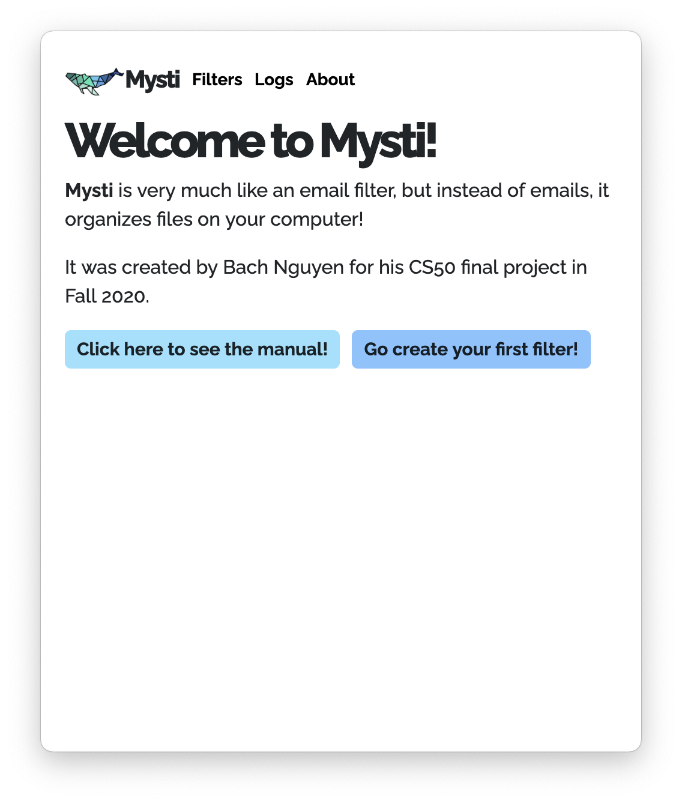
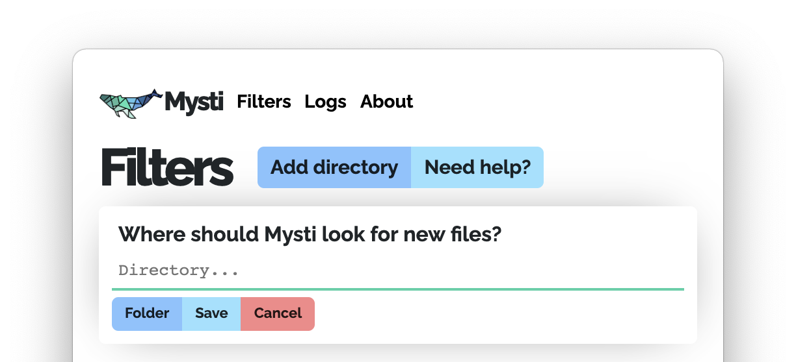
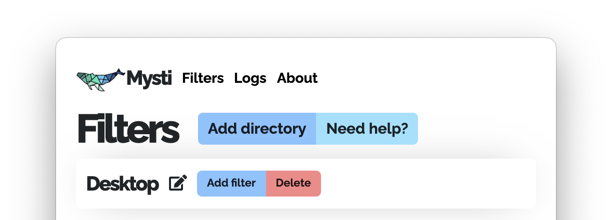
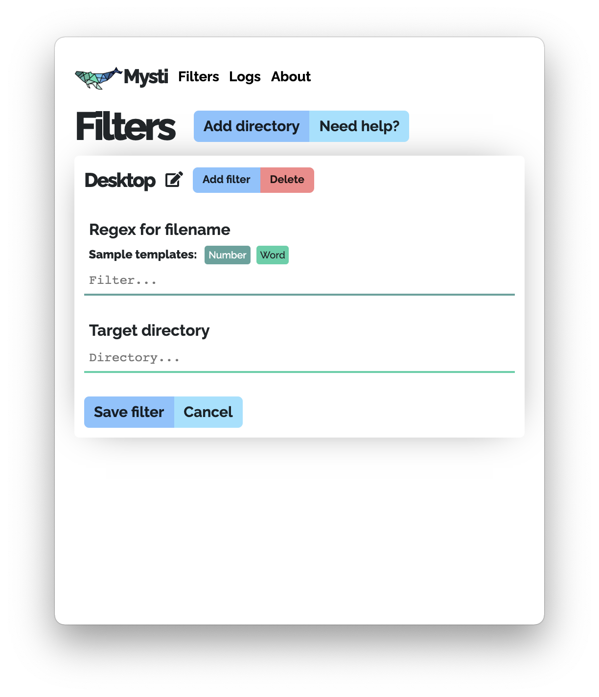
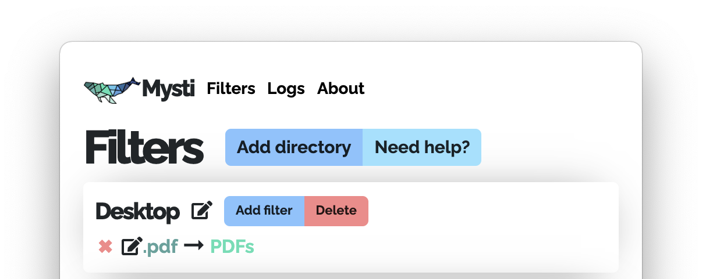
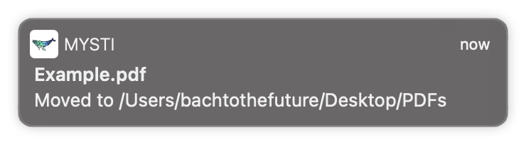
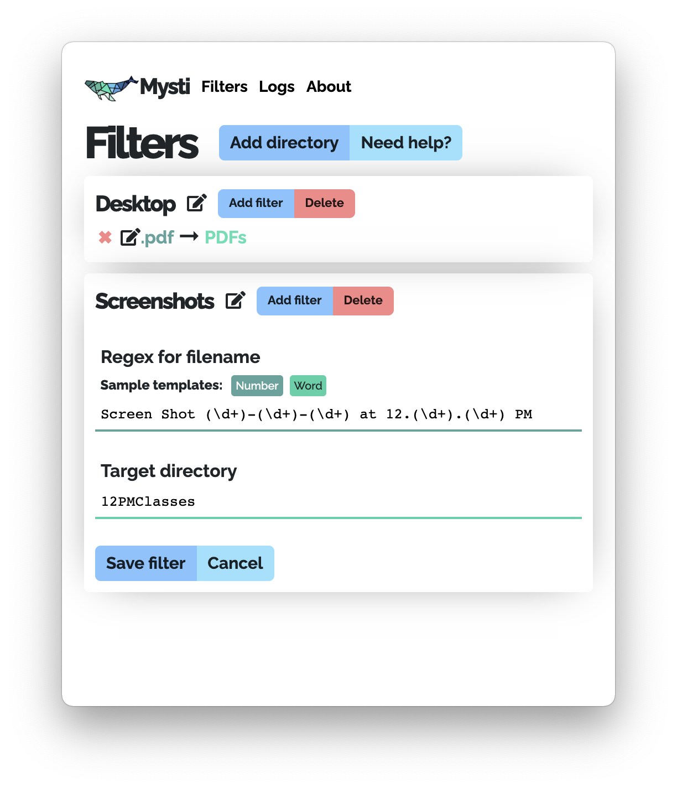
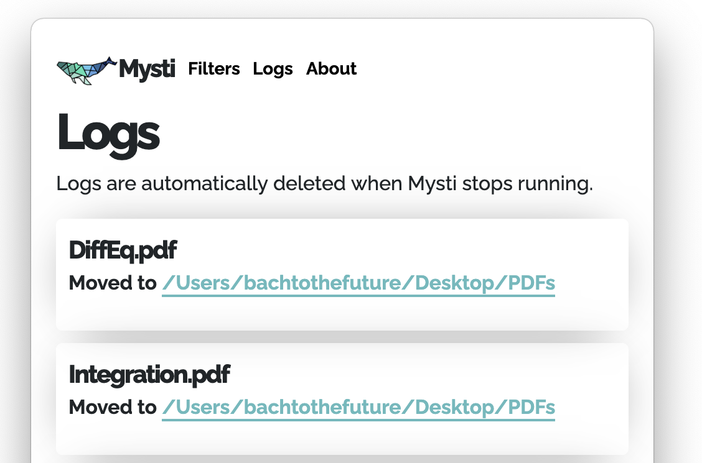

Welcome to Mysti! If you have not done so already, click here to download Mysti to your computer.
Table of contents
Getting started
When you open Mysti for the first time, you should see this window.
Go ahead and click Go create your first filter! to begin!
Choosing Directories
Before creating filters, you must first indicate in which directory or directories Mysti should organize your files.
You should see the following. If you don't, go ahead and click the blue Add directory.
Go ahead and click the small blue button called Folder . You should be able to choose a folder, and once you have done so press Open.
The textbox above the button should be filled like this if you chose your Desktop as the directory:
Just press the Save button to save your changes! You should end up with something like this:
Editing Directories
If you want to change directories and keep the filters that you have for this directory, click on the little icon next to the directory name. This will open up the editing mode.
If you unintentionally went into the editing mode you can always click Cancel to go back.
Deleting Directories
If you no longer want Mysti to organize a certain directory or folder, just click the red Delete button to remove all the filters in the directory.
Creating Filters
Once you create a directory, you can then start to create filters.
Click Add filter and you should see the following:
Under Regex for filename, in the "Filter..." textbox, type in a regex pattern that will match a filename.
Then in the Target Directory field type in the name of the folder that you wish to move any matching files to. If you put in a directory, notice that it is going to be the relative directory, relative to the directory of the filter, not the absolute directory.
Examples: if you want to match all PDF files you would type ".pdf" in the filters field. If you want to move all PDF files to a folder called PDF, type "PDF" in the target directories field. Like this:
Once you click Save filter you should get a screen like this:
You are finally done! Everytime a new file is created or a file is moved in the directories specified, Mysti will notify you that the file has been moved if it matches the filter.
Editing Filters
Click on the edit icon next to the name of the filter that you want to edit and it will bring up the edit menu.
Deleting Filters
Click on the red x to the left to delete the filter.
Advanced Filters
Let's say you want to organize your screenshots.
On MacOS, the format of a screenshot picture is
Screen Shot [year]-[month]-[day] at [hour].[min].[sec] [PM/AM]
Let's say you want all screenshots taken at 12:00 PM. This is how you would type out the filters field.
Screen Shot (\d+)-(\d+)-(\d+) at 12.(\d+).(\d+) PM
The (\d+) is a placeholder for any number. This would mean that this regex would match any dates as long as the file was created exactly at 12:00 PM.
Take a look at this screenshot for reference.
Instead of writing (\d+) everytime you need a placeholder, you can also press the Number button next to Sample templates to insert the pattern into the textbox.
Let's say you want to place these files into different folders based on the year that they were taken in. Then for target directory you would put something like
$1-12PMScreenshots
The $1 is also a placeholder for the first match of the regex, or the first item that was surrounded by parenthesis (\d+). For screenshots taken in the year 2020, the screenshot would go in a folder called 2020-12PMScreenshots. For 2019, it would go in 2019-12PMScreenshots, and so on.
Logs
If you don't remember where a file has been moved, click on the Logs navigation link at the top, and you will be taken to the logs page. This page is just to keep track of which files have been moved where.
You can also click on the highlighted directory links to navigate there to find the files.
